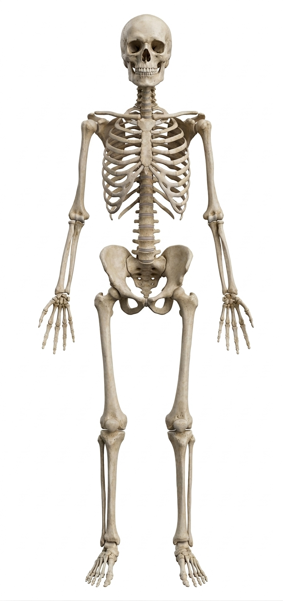

Tratamiento de lesiones del manguito rotador, inestabilidad articular, pinzamiento y artrosis de hombro mediante artroscopía de mínima invasión.
Atención personalizada y de alta especialidad en patologías de rodilla, cadera y reemplazo articular. Devuélvele la movilidad y calidad a tu vida con un enfoque quirúrgico moderno.
Selecciona la zona afectada para conocer los padecimientos comunes y las opciones de tratamiento especializado que ofrecemos.

Soluciones médicas avanzadas con técnicas quirúrgicas modernas y tratamientos no invasivos de vanguardia.
Diagnóstico integral de padecimientos óseos y articulares, manejo de fracturas, luxaciones y dolor articular agudo.
Recuperación acelerada para atletas y personas activas con lesiones de ligamentos, tendones y meniscos.
Tratamiento conservador e intervencionista para hernias discales, desgaste vertebral y desalineación espinal.
Cirugía de prótesis de alta precisión para cadera y rodilla con materiales duraderos de última generación.
Atención inmediata de fracturas, luxaciones y lesiones traumáticas agudas, con manejo quirúrgico o conservador según el caso.
El Dr. Mario Portillo es especialista en ortopedia y traumatología, con subespecialidad en cirugía de reemplazo articular y artroscopía realizada en centros hospitalarios de alto prestigio en EE.UU. Su práctica se basa en la precisión técnica y un trato humano, transparente y directo con cada paciente.
Conoce más →Queremos que te sientas seguro y acompañado desde el primer segundo.
Elige la fecha y horario que mejor se adapten a tu agenda vía web o teléfono.
Examen físico minucioso y revisión clínica detallada sin prisas.
Análisis de radiografías/resonancias e indicación del plan adecuado.
Inicio del tratamiento conservador o programación de cirugía con seguimiento lineal.
El Dr. Portillo me explicó exactamente qué pasaba con mi rodilla. Tras la cirugía de reemplazo, he vuelto a caminar sin dolor en menos tiempo del que esperaba.
Llevaba más de dos años con dolor constante en la cadera. Su enfoque quirúrgico y el trato personalizado de todo su equipo hicieron toda la diferencia.
Excelente profesional. Me operó del manguito rotador y la atención postoperatoria fue constante y clara. Altamente recomendado en San Salvador.
Información verificada sobre las dudas más comunes antes y después de un tratamiento. Haz clic en cualquier tema para leer la guía completa.
Cuándo se recomienda un reemplazo articular, cómo es la recuperación y qué tan duradera es una prótesis moderna.
Leer más →¿Un LCA roto puede sanar sin cirugía? Señales de alarma y opciones de tratamiento según el nivel de actividad.
Leer más →Diferencias entre un dolor muscular pasajero y señales que sí requieren evaluación con un especialista.
Leer más →Qué hacer (y qué no) ante una sospecha de fractura mientras llegas a una evaluación médica.
Leer más →Estamos para atenderte en instalaciones médicas de primer nivel en San Salvador.
Torre Médica Medicentro, Nivel 4, Local 402
San Salvador, El Salvador
+503 2200-8888
+503 7890-1234 (WhatsApp)
contacto@drmarioportillo.com
Lunes a Viernes: 8:00 AM – 5:00 PM
Sábados: 8:00 AM – 12:00 MD